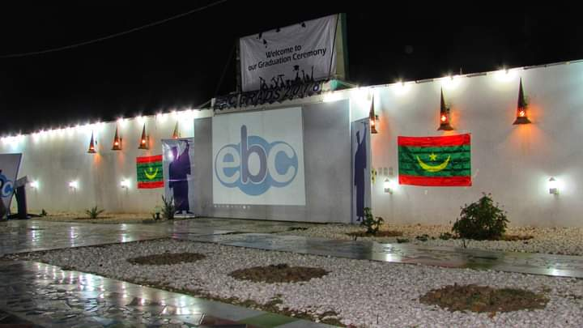

"Why did you cAme late?"
That was exactly what transpired between me and Sumayyah while I was still an Arabic teacher at Usool madrasah in Agege Lagos.
But I didn't just blow the blunder and end it there. No! I went as far as arguing with my 6-year girl, Sumayyah, turning in all my energy to drive home my point that I was absolutely correct!
I remember asking Sumayyah to prove to me that "why did you cAme late" was wrong, or was that not a past tense?
She said she couldn't prove it but all she knew was that English is not spoken that way.
But..
Won't Sumayyah be blown away if she finds out that now my earnings from fluency have sponsored my trip to this Arab land and I was recently offered a job at the biggest English institute without any certificate or CV..?
Not just that..
I've also been perceived to be of the best, if not the overall best instructor, despite having white instructors at the institute who also speak the native English accent.

Hope I wouldn't break your heart if I told you I had to call the job quits when I realised their was free-mixing at the centre.
I believe it would be very dangerous for a young man like myself to start mingling with white girls under the guise of "I'm their fluency go-to guy.."
Hence, Islam forbids such intermingling.
Then boom!
When I came back online with greater vigour, I had made my supposed second month salary at the institute in just 3 days...
But what action did I take to land myself all these internet goodies?
Switching from one stream of income to another..
Well, I decided to learn how to speak exactly like a native English speaker.
This actually means speaking the English language flawlessly in a way that makes people wonder if you're actually from the UK or the US.
"Is English your mother tongue?"
That was the exact question that I got from Jawwaad the first day we met during the last 10 days of Ramadhan.
Wait, you say 'pepperish?' 👇🏾
Jawwaad was born and raised in The US. We met at a village called The Hill Of The Camels after calling my job quits at the institute.
But how can YOU too achieve this for yourself and start making good earnings from it?
Relax a bit..
Let us start with what you don't need to know before you can speak exactly like a native English speaker..
You don't have to go enrol at an elocution school where you'll be taught all those boring stuffs that can easily put you off.
This may take you by surprise but the truth is: you don't have to start learning the 44 or 45 consonant and vowel sounds.
You also do not need to start learning how to transcribe or do any boring stuff of that sort.
Learning what's mentioned in numbers 2 and 3 isn't a waste of time though but all I'm telling you is:
I was able to speak like a native English speaker to the amazement of my friends and acquaintances without knowing all of those freaking boring things.
So how do you now learn it in a well simplified manner without having to go through all those complex things?
Perhaps you're now considering buying a best selling fluency course on Udemy or even learn it free from YouTube?
Just a minute..
My experience buying such course on Udemy made me realise that these white instructors on Udemy don't deeply understand what it takes for an African to speak the English language exactly like a native.
So I later found out that those courses can't help a typical Nigerian achieve the kind of results we've been talking about all the while.
And this is where I shall be helping you.
I am Bello Kolawole Mustapha.
I'm a 7-figure fluency and British accent coach and the founder of Accentrium that has been helping Nigeirans speak exactly like a native Briton since March 2021 even if they do not understand the basic rules of grammar.
Kindly hear directly from my student, Zaynab, how she's moved from speaking like a regular Nigerian to speaking exactly like a Britain-born.
Teaching it to others is just one of the many ways to make money from which you can start milking money from your premium fluency.
You can equally use it to get any job of your dream or to attract high paying customers to your business.
I said high paying customers simply because of the first things people believe once you speak amazingly well is that:
• Oh, this guy is so smart and intelligent
• He's financially okay
• He's highly skilled
• He's got the connections
• He should be living in an elite community, Lekki, Banana Island and the likes
• Maybe he's lived abroad before
• He must have a lot of opportunities out there. So let's sign the deal with him before someone else snatches him away from us.
Thoughts like these rush to us naturally. Hence this is what you too will think when you hear someone speak the English language exactly like a native.
The thought naturally drops in your head that the speaker is just well-off.
Exactly what people will begin to think of you too and which will allow you to charge them whatever amount you want from them whenever they're hiring you.
Here's another student of mine, Abdullah Fawzaan, a madrasah boy like myself who achieved the same result in roughly a month and how his new mode of speaking has been drawing people to his business..
For you to achieve this without having to go through those boring things that I mentioned earlier, I've prepared a class for you called "Accent Smart" where I shall be showing you what steps to take to achieve the same result as mine or even something way better than mine.